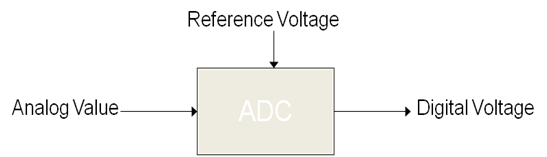
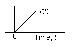
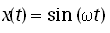

Shakshat Virtual Lab 
INDIAN INSTITUTE OF TECHNOLOGY GUWAHATI
Theory
System dynamics is an important area of study in widespread engineering applications such as vibrations, electric circuits, and control systems. Dynamic performance characteristics of a system describe how the system responds to a varying input. The most useful mathematical model for representing system behavior is the ordinary linear differential equation with constant coefficients. Accordingly, the relationship between system input x(t) and system output y(t) may be written in the following form.
where a and b are constants dependent on system physical parameters.
The corresponding transfer function of the system is
where s is the Laplace operator.
Fig. 1 shows a block diagram of the system with input x(t) and output y(t).
1. Test Inputs
The following test inputs are normally used for testing the dynamics of a system. For characterizing system in time domain, the test inputs used are impulse, step, and ramp. A swept frequency sine wave is used to characterize system in frequency domain.
1.1 Impulse Inputs
The unit impulse function is defined as for and is zero elsewhere.
The Laplace transform of unit impulse is given by

Unit impulse response is
1.2 Step Input
The unit step function u(t) is defined as
The Laplace transform of unit impulse is given by
Unit step response is
1.3 Ramp Input
The unit ramp function r(t) is defined as
The Laplace transform of unit ramp is given by
Unit ramp response is
1.4 Sine Wave Input
The unit sine wave function x(t) is defined as
A swept-frequency sine wave input is used to characterize system in frequency domain and the frequency response is obtained. The frequency response consists of two plots: Gain versus frequency and phase versus frequency.
Frequency response

where